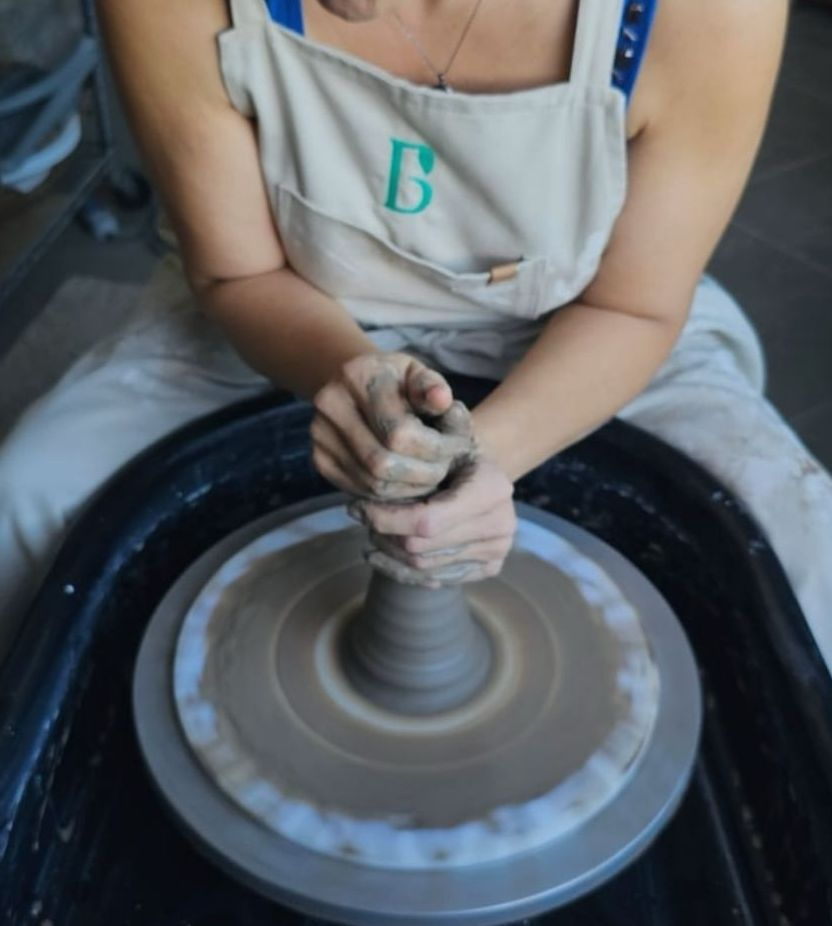

Especialista em torno cerâmico, dedicada à formação técnica consciente de novos ceramistas e à produção artesanal de peças autorais e sob encomenda em todo o Brasil.
100%
Atendimento personalizado no seu espaço
Brasil
Workshops itinerantes (SP, BA, ES e mais)
Sob Medida
Produção de grandes formatos e séries

"Conto com a sua parceria para fazermos peças incríveis!"
Ericelma Batista
A aula tradicional ensina apenas a técnica; o processo constrói compreensão. No meu trabalho, cada aluno e parceiro entende não apenas o "como fazer", mas o porquê de cada movimento, o que acontece se algo mudar e onde a peça pode falhar.
Acompanhar o erro
Entender a trinca, ajustar a base e nunca esconder as falhas do barro.
Repetir e refinar
Observar a argila e voltar para o básico sempre que necessário.
Atendimento individual ou em grupo diretamente no seu ateliê ou espaço. Não precisa montar turmas — vou até você para uma imersão prática adaptada ao seu nível.
Confecção técnica no torno para ateliês, marcas, arquitetos e restaurantes. Domínio em peças de grande porte, vasos e conjuntos de pratos com acabamento refinado.
Parcerias com espaços criativos e escolas de cerâmica em diferentes estados (como Bahia, Espírito Santo e São Paulo) para vivências intensivas de torno.
Do preparo da massa até o momento anterior ao forno, cada etapa é conduzida com atenção aos sinais do material.
Respeito ao ponto de couro ideal para cada etapa de manipulação.
Sensibilidade tátil para evitar deformações e tensões na peça.
Alinhamento das partículas do barro para prevenir trincas no fundo.
Equilíbrio estrutural entre base, parede e borda da cerâmica.
Acabamento minucioso antes de seguir para o forno.
Diretrizes práticas para garantir o melhor rendimento em dias de produção ou oficina.
Diárias de 8 horas de trabalho focado (com possibilidade de hora extra combinada previamente).
Para produção de peças, recomenda-se mais de um dia caso o acabamento não seja feito pela equipe local.
Argila previamente sovada em boa textura e suportes de torno prontos garantem máxima produtividade.